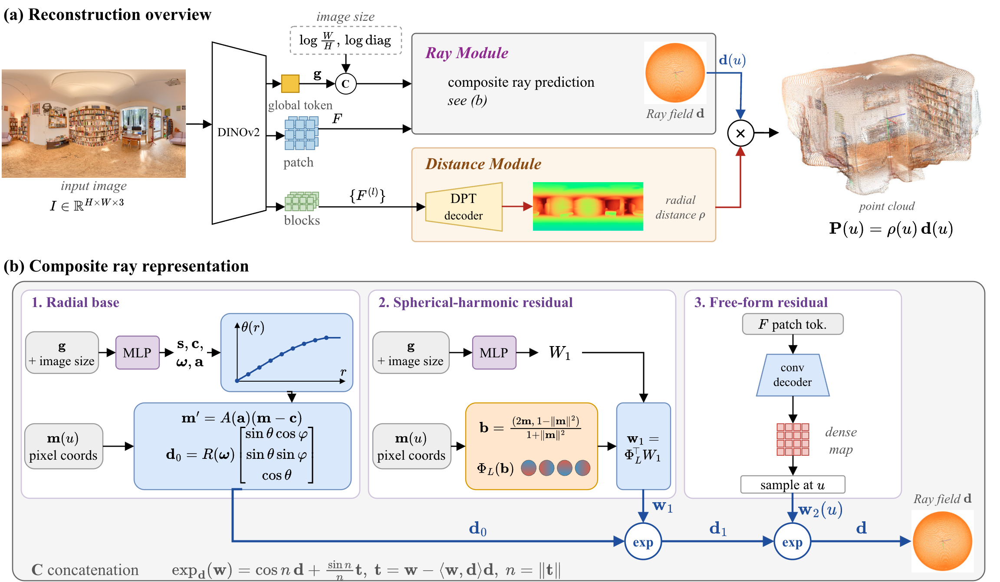
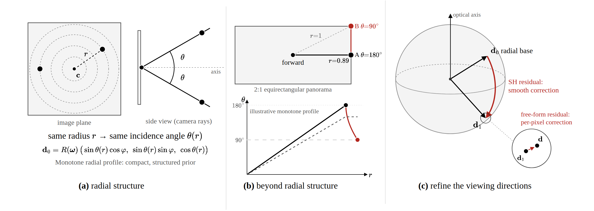
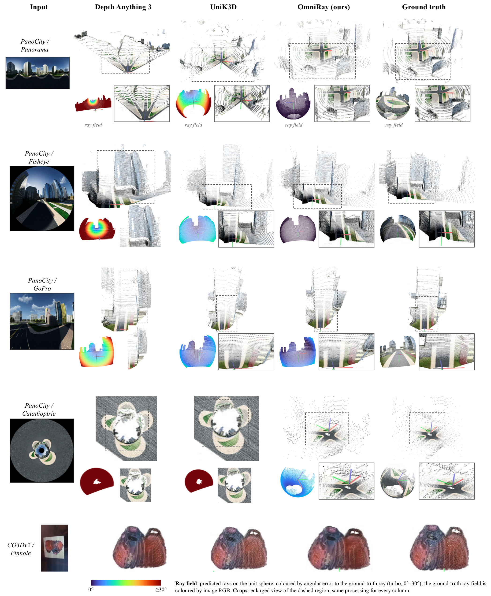
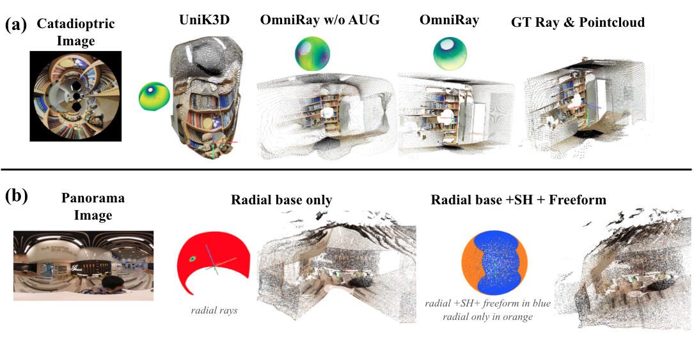
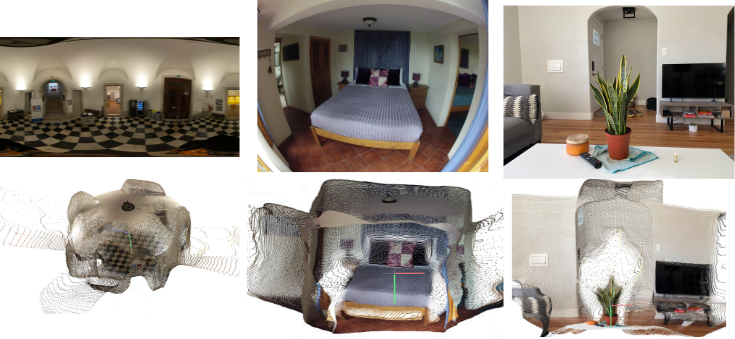
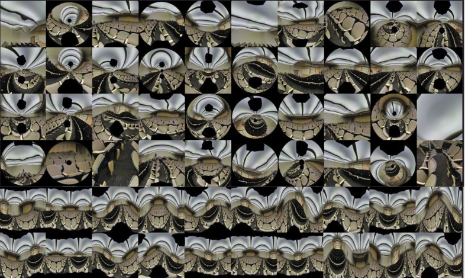
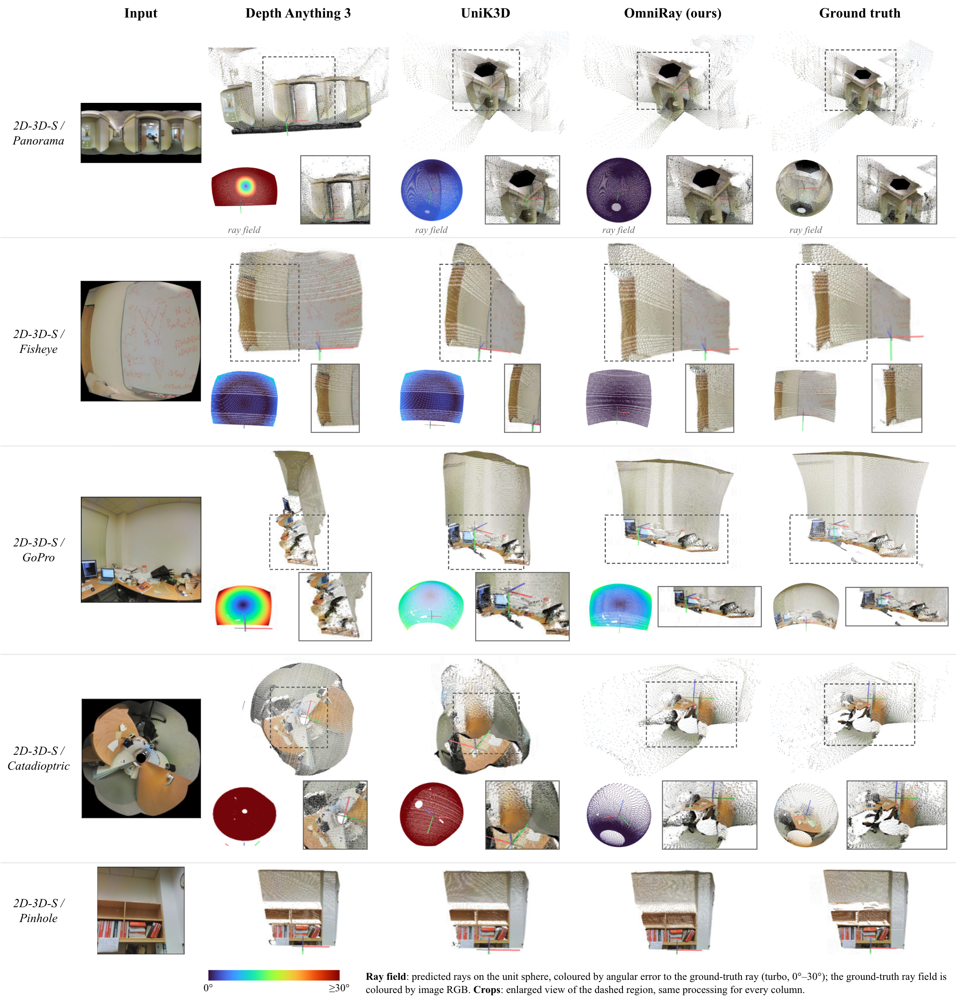
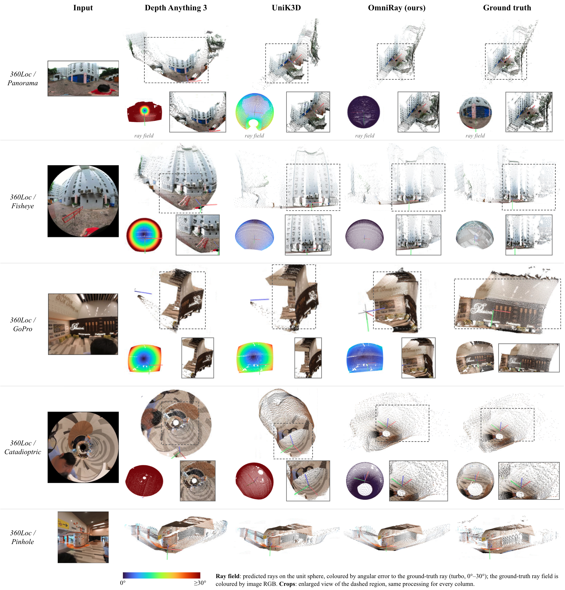

Abstract
Monocular models recover 3D geometry from a single image in one pass, but most assume a pinhole camera and produce distorted geometry on the wide-angle imagery produced by fisheye and panoramic lenses. Camera-aware models remove this assumption by predicting a per-pixel ray field. However, they represent different camera geometries using a single fixed basis to capture both the overall camera projection and its finer variations. We argue that camera geometry has a hierarchy of complexity and that the ray representation should follow it. We present OmniRay, a feed-forward model whose ray module is composed of three components: a monotone radial base that captures radially symmetric structure, a spherical-harmonic residual for smooth deviations from it, and a free-form residual for remaining local variation. These components are composed as successive rotations on the sphere, allowing the representation to accommodate diverse camera geometries. Given a single image, OmniRay predicts a ray direction and an up-to-scale radial distance for every pixel, from which a 3D pointcloud is recovered without needing camera information at inference time.
Extensive experiments across different camera configurations demonstrate that OmniRay establishes a new state-of-the-art in camera-agnostic monocular 3D reconstruction.
Overview
Given a single image from an arbitrary central camera — with no intrinsics, distortion parameters, or camera-type label — OmniRay predicts for every pixel u a unit ray direction d(u) and a radial distance ρ(u) > 0. A DINOv2 ViT-L/14 encoder produces features that drive two branches: the Ray Module composes d from a monotone radial base, a spherical-harmonic residual, and a free-form residual, each applied as a rotation on the sphere so every component refines the ray produced by the one before it; the Distance Module predicts ρ. Their combination gives the 3D point in the camera frame, P(u) = ρ(u) d(u), recovered up to a single global scale.

Why Compose Ray Representations?

Results

On seen camera types, OmniRay achieves a mean ray error of 0.14° and relative Chamfer distance of 0.0179, compared with 6.34° and 0.0760 for UniK3D and 33.03° and 0.1999 for Depth Anything 3. On the Nayar catadioptric camera — held out entirely from training — all baselines exceed 75° while OmniRay achieves 1.12° and 0.0131 CD; on the held-out GoPro fisheye, OmniRay achieves 5.53° versus 6.34° for UniK3D. On the unseen PanoCity dataset, OmniRay achieves 1.35° ray error versus 21.22° and 50.53° for UniK3D and DA3. On CO3Dv2, OmniRay's 2.97° ray error remains within a degree of both baselines.
Fig. 4 compares ray fields and camera-frame pointclouds on unseen PanoCity and CO3Dv2 images, with each ray field colored by its angular error. On the panorama, OmniRay keeps the road continuous while UniK3D breaks it across the image and DA3 fails to recover the ground structure. On the fisheye and GoPro rows, OmniRay keeps the road, pavement and lane markings straight where UniK3D bends them and DA3 also distorts the surrounding buildings. On the held-out catadioptric camera both baselines produce degraded reconstructions. On the CO3Dv2 pinhole example, OmniRay remains comparable to the baselines, demonstrating that the additional flexibility for wide-angle cameras does not come at the expense of pinhole imagery. On in-the-wild images, OmniRay also recovers coherent 3D structure, as shown in Fig. 6.
| Representation | #Params | Angular error (°)↓ | ||
|---|---|---|---|---|
| Fisheye | Equirectangular | Catadioptric | ||
| Pinhole | 6 | 5.731 | 48.080 | 50.434 |
| Double sphere | 8 | 0.021 | 22.932 | 41.876 |
| Radial (K=16) | 24 | 0.002 | 22.802 | 0.104 |
| Radial (K=32) | 40 | 0.002 | 22.801 | 0.023 |
| SH (L=7) | 195 | 0.276 | 0.641 | 0.295 |
| Radial₁₆ + SH₇ residual (ours) | 216 | 0.075 | 0.217 | 0.174 |
| Free field | 76.8k | 0.005 | 0.013 | 0.015 |
| Method | Seen cameras | Held-out cameras | Held-out domains | |||||||
|---|---|---|---|---|---|---|---|---|---|---|
| Aggregate | Catadioptric† | GoPro† | PanoCity† | CO3Dv2† | ||||||
| Ang. (°)↓ | CD↓ | Ang. (°)↓ | CD↓ | Ang. (°)↓ | CD↓ | Ang. (°)↓ | CD↓ | Ang. (°)↓ | CD↓ | |
| GeoCalib | 30.997 | – | 119.662 | – | 14.126 | – | 47.132 | – | 3.713 | – |
| AnyCalib | 28.655 | – | 107.129 | – | 10.031 | – | 42.335 | – | 2.711 | – |
| DA3 | 33.028 | 0.1999 | 121.566 | 1.0412 | 16.637 | 0.1097 | 50.533 | 0.3677 | 2.041 | 0.0288 |
| UniK3D | 6.336 | 0.0760 | 75.702 | 0.5948 | 6.342 | 0.0454 | 21.220 | 0.2120 | 2.676 | 0.0277 |
| OmniRay w/o AUG | 1.385 | 0.0592 | 30.867 | 0.3440 | 7.965 | 0.0641 | 6.352 | 0.0984 | 2.825 | 0.0330 |
| OmniRay + RG | 0.356 | 0.0205 | 1.118 | 0.0113 | 5.180 | 0.0375 | 1.592 | 0.0277 | 2.935 | 0.0411 |
| OmniRay | 0.140 | 0.0179 | 1.120 | 0.0131 | 5.533 | 0.0392 | 1.350 | 0.0240 | 2.967 | 0.0380 |
Table 2 — Main benchmark. Results on seen cameras, held-out cameras, and held-out domains. Ang. denotes mean ray error in degrees; CD denotes median relative Chamfer distance, normalized by each scene's mean point norm. Metrics are macro-averaged over test images, and all methods use per-image median scale alignment. Lower is better; best results are bold. † denotes exclusion from our training data; a dash indicates that the method does not predict scene geometry. Full per-camera and per-dataset results and additional metrics are provided in Tables 4–6 below.
| Camera | Method | Ray | Radial Dist. | Pointcloud Quality | ||||
|---|---|---|---|---|---|---|---|---|
| Ang. (°)↓ | AbsRel↓ | δ₁↑ | CD↓ | Acc↓ | Comp↓ | F@10cm↑ | ||
| pinhole | GeoCalib | 2.196 | – | – | – | – | – | – |
| AnyCalib | 1.043 | – | – | – | – | – | – | |
| DA3 | 6.604 | 0.1508 | 0.862 | 0.0701 | 0.0862 | 0.0540 | 0.300 | |
| UniK3D | 3.619 | 0.1371 | 0.871 | 0.1058 | 0.1802 | 0.0315 | 0.356 | |
| OmniRay | 0.155 | 0.0769 | 0.925 | 0.0242 | 0.0355 | 0.0130 | 0.533 | |
| fisheye | GeoCalib | 30.001 | – | – | – | – | – | – |
| AnyCalib | 22.134 | – | – | – | – | – | – | |
| DA3 | 28.727 | 0.3225 | 0.562 | 0.1888 | 0.1111 | 0.2665 | 0.066 | |
| UniK3D | 7.055 | 0.2155 | 0.768 | 0.0543 | 0.0569 | 0.0517 | 0.198 | |
| OmniRay | 0.154 | 0.0906 | 0.924 | 0.0159 | 0.0197 | 0.0121 | 0.531 | |
| panoramic | GeoCalib | 60.795 | – | – | – | – | – | – |
| AnyCalib | 62.788 | – | – | – | – | – | – | |
| DA3 | 63.752 | 0.3352 | 0.547 | 0.3408 | 0.1956 | 0.4859 | 0.009 | |
| UniK3D | 8.336 | 0.2154 | 0.774 | 0.0678 | 0.0723 | 0.0633 | 0.174 | |
| OmniRay | 0.110 | 0.0593 | 0.949 | 0.0137 | 0.0163 | 0.0111 | 0.585 | |
| catadioptric† | GeoCalib | 119.662 | – | – | – | – | – | – |
| AnyCalib | 107.129 | – | – | – | – | – | – | |
| DA3 | 121.566 | 0.1617 | 0.771 | 1.0412 | 0.7232 | 1.3592 | 0.000 | |
| UniK3D | 75.702 | 0.2523 | 0.656 | 0.5948 | 0.5047 | 0.6849 | 0.004 | |
| OmniRay | 1.120 | 0.0396 | 0.969 | 0.0131 | 0.0130 | 0.0131 | 0.633 | |
| GoPro† | GeoCalib | 14.126 | – | – | – | – | – | – |
| AnyCalib | 10.031 | – | – | – | – | – | – | |
| DA3 | 16.637 | 0.1657 | 0.840 | 0.1097 | 0.0811 | 0.1383 | 0.079 | |
| UniK3D | 6.342 | 0.1665 | 0.857 | 0.0454 | 0.0449 | 0.0458 | 0.235 | |
| OmniRay | 5.533 | 0.0842 | 0.932 | 0.0392 | 0.0354 | 0.0429 | 0.215 | |
| Scenes | Method | Ray | Radial Dist. | Pointcloud Quality | ||||
|---|---|---|---|---|---|---|---|---|
| Ang. (°)↓ | AbsRel↓ | δ₁↑ | CD↓ | Acc↓ | Comp↓ | F@10cm↑ | ||
| 2D3DS | GeoCalib | 40.713 | – | – | – | – | – | – |
| AnyCalib | 37.520 | – | – | – | – | – | – | |
| DA3 | 43.775 | 0.2124 | 0.747 | 0.3614 | 0.1744 | 0.5483 | 0.224 | |
| UniK3D | 19.432 | 0.1272 | 0.864 | 0.1487 | 0.0981 | 0.1994 | 0.411 | |
| OmniRay | 1.619 | 0.0568 | 0.958 | 0.0236 | 0.0226 | 0.0246 | 0.767 | |
| 360Loc | GeoCalib | 48.223 | – | – | – | – | – | – |
| AnyCalib | 42.021 | – | – | – | – | – | – | |
| DA3 | 48.064 | 0.2872 | 0.629 | 0.3212 | 0.2121 | 0.4303 | 0.048 | |
| UniK3D | 19.979 | 0.2709 | 0.676 | 0.1601 | 0.1455 | 0.1747 | 0.154 | |
| OmniRay | 1.274 | 0.0713 | 0.947 | 0.0160 | 0.0160 | 0.0160 | 0.590 | |
| PanoCity† | GeoCalib | 47.132 | – | – | – | – | – | – |
| AnyCalib | 42.335 | – | – | – | – | – | – | |
| DA3 | 50.533 | 0.1819 | 0.774 | 0.3677 | 0.3318 | 0.4037 | 0.001 | |
| UniK3D | 21.220 | 0.1940 | 0.815 | 0.2120 | 0.2719 | 0.1522 | 0.015 | |
| OmniRay | 1.350 | 0.0823 | 0.914 | 0.0240 | 0.0333 | 0.0147 | 0.141 | |
| CO3Dv2† | GeoCalib | 3.713 | – | – | – | – | – | – |
| AnyCalib | 2.711 | – | – | – | – | – | – | |
| DA3 | 2.041 | 0.0573 | 0.950 | 0.0288 | 0.0199 | 0.0377 | 0.282 | |
| UniK3D | 2.676 | 0.0478 | 0.963 | 0.0277 | 0.0233 | 0.0322 | 0.293 | |
| OmniRay | 2.967 | 0.0889 | 0.914 | 0.0380 | 0.0291 | 0.0469 | 0.173 | |
| Split | Method | Ray | Radial Dist. | Pointcloud Quality | ||||
|---|---|---|---|---|---|---|---|---|
| Ang. (°)↓ | AbsRel↓ | δ₁↑ | CD↓ | Acc↓ | Comp↓ | F@10cm↑ | ||
| all | GeoCalib | 45.356 | – | – | – | – | – | – |
| AnyCalib | 40.625 | – | – | – | – | – | – | |
| DA3 | 47.457 | 0.2272 | 0.716 | 0.3501 | 0.2394 | 0.4608 | 0.091 | |
| UniK3D | 20.211 | 0.1974 | 0.785 | 0.1736 | 0.1718 | 0.1754 | 0.193 | |
| OmniRay | 1.414 | 0.0701 | 0.940 | 0.0212 | 0.0240 | 0.0184 | 0.499 | |
| seen | GeoCalib | 30.997 | – | – | – | – | – | – |
| AnyCalib | 28.655 | – | – | – | – | – | – | |
| DA3 | 33.028 | 0.2695 | 0.657 | 0.1999 | 0.1310 | 0.2688 | 0.125 | |
| UniK3D | 6.336 | 0.1893 | 0.804 | 0.0760 | 0.1031 | 0.0488 | 0.242 | |
| OmniRay | 0.140 | 0.0756 | 0.933 | 0.0179 | 0.0238 | 0.0120 | 0.550 | |
| held-out† | GeoCalib | 66.894 | – | – | – | – | – | – |
| AnyCalib | 58.580 | – | – | – | – | – | – | |
| DA3 | 69.102 | 0.1637 | 0.806 | 0.5754 | 0.4021 | 0.7488 | 0.040 | |
| UniK3D | 41.022 | 0.2094 | 0.756 | 0.3201 | 0.2748 | 0.3654 | 0.120 | |
| OmniRay | 3.326 | 0.0619 | 0.951 | 0.0261 | 0.0242 | 0.0280 | 0.424 | |
| Ray representation | Training | Seen cameras | Held-out config† | |||
|---|---|---|---|---|---|---|
| Panorama | Fisheye | Pinhole | Catadioptric | GoPro | ||
| Radial base | – | 21.825 | 1.761 | 0.788 | 6.039 | 5.377 |
| Spherical base | – | 5.088 | 1.540 | 0.790 | 13.327 | 5.962 |
| Free-form field | – | 0.783 | 1.508 | 0.621 | 11.335 | 5.191 |
| Radial + SH residual | Joint | 0.796 | 1.784 | 0.581 | 1.879 | 6.566 |
| Radial + SH residual | Staged | 0.610 | 1.545 | 0.675 | 1.680 | 3.393 |
| Radial + free-form | Joint | 1.018 | 1.394 | 0.403 | 3.038 | 3.667 |
| Radial + free-form | Staged | 1.111 | 1.605 | 0.386 | 1.797 | 4.248 |
| SH + free-form | Joint | 1.114 | 1.747 | 1.250 | 2.568 | 3.739 |
| SH + free-form | Staged | 1.026 | 2.567 | 0.553 | 2.316 | 5.142 |
| Radial + SH + free-form | Joint | 0.728 | 1.963 | 0.688 | 2.525 | 3.636 |
| Radial + SH + free-form | Joint, γ₀=γ₁=0 | 0.451 | 1.864 | 0.705 | 1.838 | 3.604 |
| Radial + SH + free-form | Staged, VGGT init | 0.486 | 1.630 | 0.330 | 2.576 | 5.096 |
| Radial + SH + free-form | Staged | 0.399 | 1.322 | 0.418 | 1.538 | 3.462 |
Table 3 — Ray representation ablation. Mean angular ray error in degrees (lower is better) at native resolution. Seen camera families are evaluated on held-out configurations; † denotes configurations excluded from training. Only the ray module is trained and evaluated. Best results are bold.

The w/o AUG row of Table 2 isolates the random-lens sampling. Without it the seen cameras remain strong at 1.39°, but the held-out catadioptric and GoPro errors rise to 30.87° and 7.97°; restoring it recovers 1.12° and 5.53° and improves the seen cameras to 0.14°. Fig. 5a shows the same effect on a catadioptric example, where the unaugmented model exhibits larger ray-field and geometric errors. These results indicate that random-lens sampling is important for extending the composite representation beyond the camera configurations encountered during training. Adding ray guidance to each DPT scale (+ RG) leaves the metrics unchanged to within run-to-run variation; the injection is zero-initialized and could use the prompt if it helped, so we omit it.
Table 3 isolates and analyses different ray representations. The radial base performs well on fisheye and pinhole cameras (1.761° and 0.788°) but struggles on panoramas (21.825°), where a monotone radial profile is insufficient. The spherical base reduces panoramic error to 5.088°, while the free-form field performs best among single representations on panoramas, fisheye, and pinhole, but reaches 11.335° on the held-out catadioptric configuration. These results motivate combining a structured radial base with more flexible residuals.
Adding an SH residual to the radial base improves panoramic and held-out accuracy; staged training achieves 0.610° and 1.680°, respectively, and the best GoPro result (3.393°). Adding the free-form residual further improves the panorama (0.399°), fisheye (1.322°), and catadioptric results (1.538°) in the full staged model, which also outperforms both jointly trained three-term variants across all five configurations. On pinhole cameras, the full model remains competitive at 0.418°, ranking fourth behind the VGGT-initialized variant (0.330°) and the two radial-plus-free-form variants. While the additional spherical residual offers little benefit for this narrow-field geometry, it supports greater flexibility across wide-field cameras. Overall, these results support the staged radial → SH → free-form composition as a balance between geometric structure and representational flexibility.




Conclusion
We began with two questions: how the pixel-to-ray mapping can remain both compact and expressive, and whether a single representation is necessary for every camera geometry? OmniRay answers both by composing the ray field rather than mapping every camera into one basis. A monotone radial base carries the structure conventional lenses already possess, a spherical-harmonic residual supplies the smooth deviations a radial profile cannot express, and a free-form residual accounts for the remaining local variation, each applied as a rotation on the sphere so that the representation adapts to the camera without camera-type input or model selection. A shared distance module scales the predicted rays into a point cloud in a single forward pass, and sampling lenses continuously during training keeps the composition accurate on geometries it has never seen.
The oracle analysis establishes the ceilings that motivate this design, and the trained model follows them: a mean ray error of 0.14° on the camera families seen in training, and 1.12° on a catadioptric geometry withheld from it, where every baseline exceeds 75°. The reconstruction is recovered only up to a single global scale, so all point clouds are compared after a per-image alignment. Since the representation is defined per image and per pixel, extending OmniRay to N-view reconstruction is a natural next step.
Acknowledgements
This research is based upon work supported by the Office of the Director of National Intelligence (ODNI), Intelligence Advanced Research Projects Activity (IARPA), via IARPA R&D Contract No. 140D0423C0076. The views and conclusions contained herein are those of the authors and should not be interpreted as necessarily representing the official policies or endorsements, either expressed or implied, of the ODNI, IARPA, or the U.S. Government. The U.S. Government is authorized to reproduce and distribute reprints for Governmental purposes notwithstanding any copyright annotation thereon.